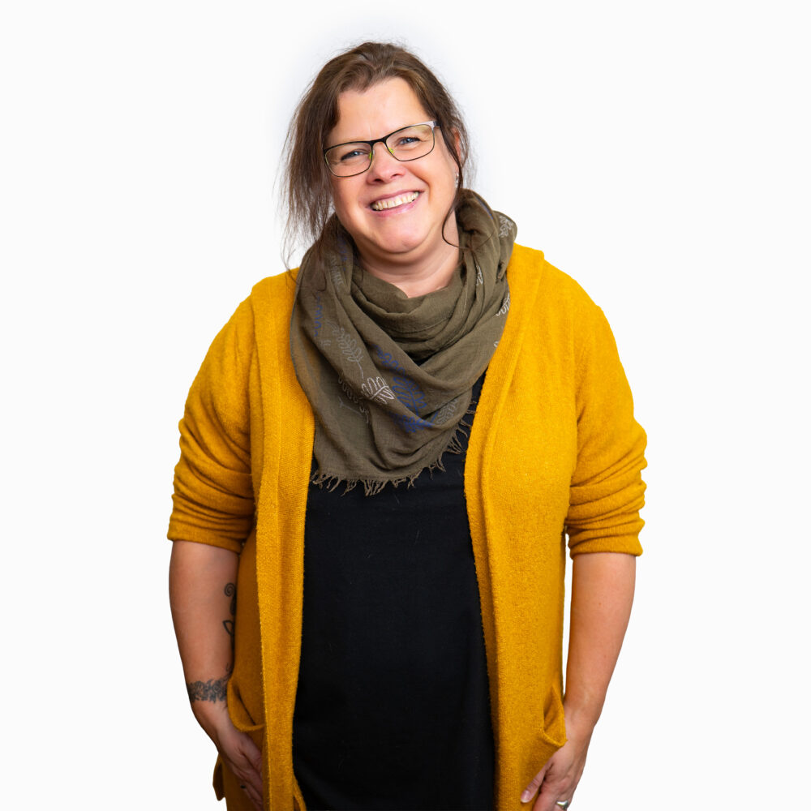

Über mich
Mit viel Empathie und Leidenschaft — in jeder Lebenslage.
Ich bin Steffi, freie Rednerin (IHK) aus Buchholz in der Nordheide — von der Ostsee der Liebe wegen in den Süden Hamburgs gezogen. Ich schreibe und halte Reden für die Tage, die im Leben bleiben. Die besten davon stammen nicht von mir, sondern von den Menschen, die mir vorher ihre Geschichte erzählen.

Foto: Portrait von Steffi, HochformatMein Weg
Von der Ostsee in die Nordheide.
Aufgewachsen bin ich mit Wind, Wasser und Weite — die Ostsee war lange mein Zuhause. Dann kam die Liebe, und mit ihr der Umzug nach Seevetal. Heute lebe ich in Buchholz in der Nordheide, wo mein Mann und ich gerade ein altes Haus sanieren: viel Staub, viel Geduld und jeden Tag ein Stück mehr Zuhause.
Wer mich kennt, sagt: empathisch, fröhlich und manchmal ein wenig verrückt. Ich glaube, genau diese Mischung braucht es, um Menschen an ihren großen Tagen zu begleiten — das Einfühlen in das, was gerade wichtig ist, und die Leichtigkeit, die einem Fest gut tut. Mein Leitgedanke bei jeder Zeremonie: mit viel Empathie und Leidenschaft, in jeder Lebenslage.
Optional ein Absatz dazu, was du vorher beruflich gemacht hast und welcher Moment dich zur Rednerin gemacht hat.
Ausbildung und Erfahrung
Ich bin IHK-zertifizierte freie Rednerin und gestalte freie Trauungen, Trauerfeiern und Willkommensfeste — in der Nordheide, in Hamburg und in ganz Norddeutschland. Seit wann, wie viele Zeremonien — falls du das nennen möchtest.
Wie ich arbeite
Ich nehme mir Zeit. Für jede Zeremonie führe ich ausführliche Gespräche, schreibe die Rede von Grund auf neu und lese sie so lange laut, bis jeder Satz sitzt. Ich übernehme nur so viele Termine, dass jeder davon meine volle Aufmerksamkeit bekommt.
Was ich nicht mache: Reden aus Vorlagen. Zeremonien, die auch für jedes andere Paar, jede andere Familie passen würden. Und Termine, bei denen ich vorher niemanden kennengelernt habe.
 Foto: Steffi mit Hündin Lotta
Foto: Steffi mit Hündin Lotta
- Zu Hause inBuchholz in der Nordheide — unterwegs in Hamburg, Niedersachsen und Schleswig-Holstein.
- AusbildungFreie Rednerin (IHK).
- SpracheDeutsch.
- HerkunftVon der Ostsee — der Liebe wegen in den Norden Niedersachsens gezogen.
- Wenn ich nicht redeDraußen mit Hündin Lotta. Oder in der Luft: Paragliding, Zipline, Buggy-Touren. Besondere Erinnerungen trage ich als Tattoos.
Stimmen von Paaren & Familien
Steffi hat unsere Strandhochzeit zu dem Moment gemacht, an den alle Gäste noch heute denken.
Sie hat Worte für unseren Vater gefunden, die wir selbst nicht hatten. Würdevoll und tröstend.
Das Willkommensfest für unsere Tochter war herzlich, leicht und einfach wir.
Kennenlernen
Lasst uns miteinander sprechen.
Ein erstes Gespräch ist unverbindlich und kostenlos — persönlich, am Wasser oder per Video. Danach wisst ihr, ob es passt.